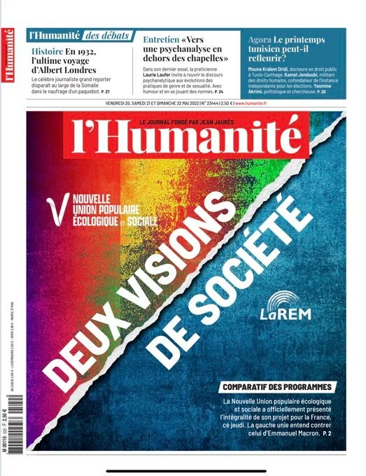

Publication d’archives
Deux visions de société. Dans l'Humanité de ce vendredi 20 mai, comparatif des programmes #NUPES et #LaREM.
Date indiquée par Facebook · 20 mai 2022
Texte conservé avec la publication
Contexte du dossier
Après la présidentielle, l’appel se déplace vers l’Assemblée : élire des députés utiles au monde du travail dans le cadre de la NUPES. La page signale le 20 mai un comparatif de L’Humanité entre les programmes de la coalition et de LaREM, sans que le seul libellé permette d’en reproduire tous les éléments.
Le 27 mai, un texte plus développé relie le vote des 12 et 19 juin aux inégalités aggravées durant la pandémie. Il s’appuie sur un rapport d’Oxfam pour opposer l’enrichissement des milliardaires à l’appauvrissement d’une grande partie de la population. La conquête d’une majorité est alors présentée comme une possibilité, à construire par le rassemblement. Nous gardons ce futur de campagne : il exprime l’espoir et l’objectif poursuivis, pas un résultat acquis.

Sources
Archive rouge · export Facebook · AR-0002-FB-01886
À lire aussi · Septembre 2022 : le débat public ne se décrète pas d’en haut